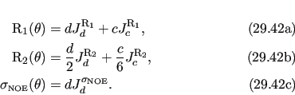
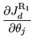
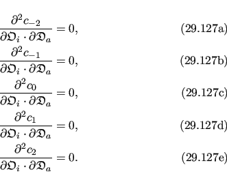
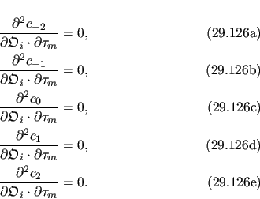
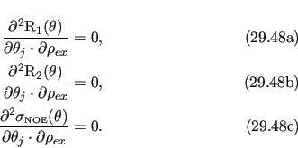
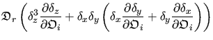

Next: The dot product Hessian Up: Ellipsoidal dot product derivatives Previous: The dot product of Contents Index
The partial derivative of the dot product  with respect to the orientational parameter
 is
is
|  | (theparentequation.153) |
Because
 is constant and not dependent on the Euler angles its derivative is zero. Therefore
is constant and not dependent on the Euler angles its derivative is zero. Therefore
|  | (theparentequation.154) |
|  |
|  |
|  |